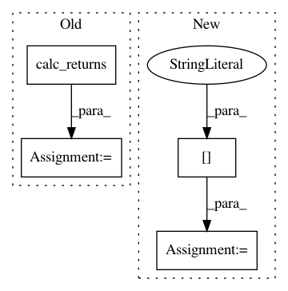

0d25397aeff73831e41aab8a788837633c75f2a6,slm_lab/agent/algorithm/sil.py,SIL,calc_sil_policy_val_loss,#SIL#Any#,125
Before Change
sil_val_loss = (max(R - v_pred, 0)^2) / 2
This is called on a randomly-sample batch from experience replay
"""
returns = math_util.calc_returns(batch, self.gamma)
v_preds = self.calc_v(batch["states"], evaluate=False)
clipped_advs = torch.clamp(returns - v_preds, min=0.0)
log_probs = policy_util.calc_log_probs(self, self.net, self.body, batch)
After Change
sil_val_loss = (max(R - v_pred, 0)^2) / 2
This is called on a randomly-sample batch from experience replay
"""
returns = batch["rets"]
v_preds = self.calc_v(batch["states"], evaluate=False)
clipped_advs = torch.clamp(returns - v_preds, min=0.0)
log_probs = policy_util.calc_log_probs(self, self.net, self.body, batch)
In pattern: SUPERPATTERN
Frequency: 3
Non-data size: 4
Instances
Project Name: kengz/SLM-Lab
Commit Name: 0d25397aeff73831e41aab8a788837633c75f2a6
Time: 2018-08-16
Author: kengzwl@gmail.com
File Name: slm_lab/agent/algorithm/sil.py
Class Name: SIL
Method Name: calc_sil_policy_val_loss
Project Name: kengz/SLM-Lab
Commit Name: 51975a8639d0b83544ec2f932567656b25bfc965
Time: 2018-09-02
Author: lgraesser@users.noreply.github.com
File Name: slm_lab/agent/algorithm/math_util.py
Class Name:
Method Name: calc_nstep_returns
Project Name: kengz/SLM-Lab
Commit Name: 0d25397aeff73831e41aab8a788837633c75f2a6
Time: 2018-08-16
Author: kengzwl@gmail.com
File Name: slm_lab/agent/algorithm/sil.py
Class Name: PPOSIL
Method Name: calc_sil_policy_val_loss